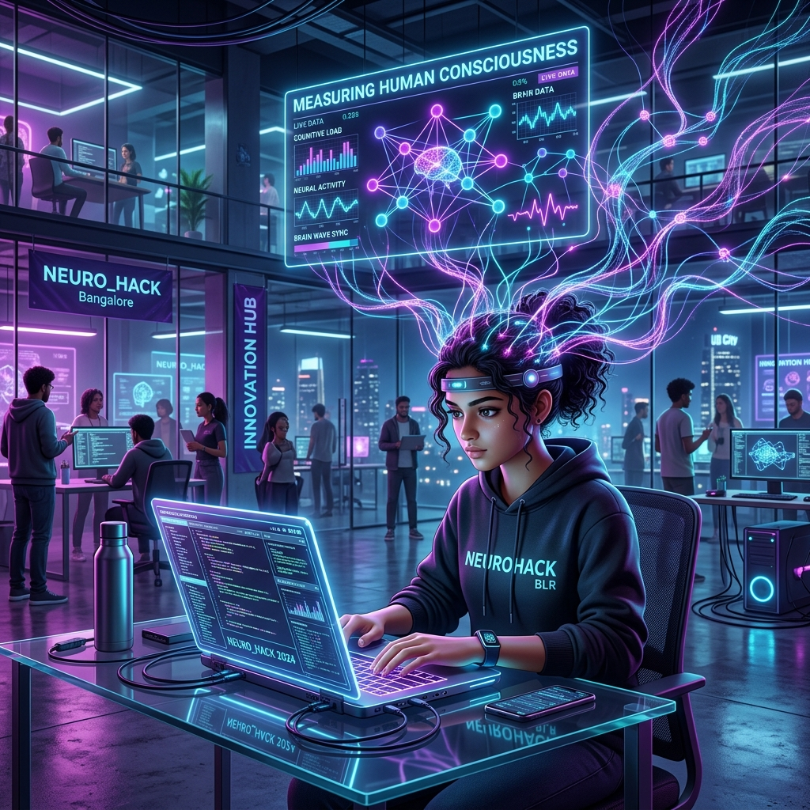

Sleep deprivation, caffeine-fueled ideation, and the thrill of building something from scratch—nothing quite matches the energy of a 24-hour product hackathon. Last weekend, I had the privilege of attending the Entrepreneur First (EF) Hackathon at their office in HSR Layout, Bangalore.
The experience wasn't just about coding; it was a masterclass in rapid prototyping, customer validation, and learning when to pivot.
The Kickoff: Friday Night Lights
It all started on Friday evening (April 10) at 6 PM. The energy in the EF office was palpable. A select group of builders gathered for a networking event centered around one goal: finding the right partners to build the future.
Unlike typical hackathons where you go in with a set team, EF encouraged us to interact, challenge each other's ideas, and form squads based on shared vision and complementary skills. By the time the night ended, the stage was set for the 24-hour sprint.
Building the MVP: Pivots and Validation
On Saturday at 12 PM, the clock started ticking. Our team dove deep into ideation. One of the most unique aspects of this hackathon was the emphasis on customer validation and peer validation.
We didn't just sit in a corner and code. We had to constantly test our assumptions, talk to mentors, and even pivot when we realized a certain direction wasn't gaining the traction we expected. It was intense, frustrating at times, but ultimately rewarding as it led us to our final vision.
The Final Product: Quantifying Consciousness
After multiple iterations, we zeroed in on a project that truly challenged the boundaries of AI and Neuroscience. We built a product aimed at quantitatively measuring human consciousness.
At the core of our solution was the TRIBEV2 model—a foundation model of vision, audition, and language for in-silico neuroscience (developed by researchers at Meta). Leveraging this state-of-the-art research, we aimed to bridge the gap between abstract human experience and measurable computational data.
Final Thoughts
Overall, it was an incredible event. Beyond the technical challenges and the 4 AM pivots, what stayed with me was the community. I made some fantastic friends and connected with some of the brightest minds in the Bangalore tech ecosystem.
Huge thanks to Entrepreneur First for hosting us and pushing us to think like founders. Onward to the next build!